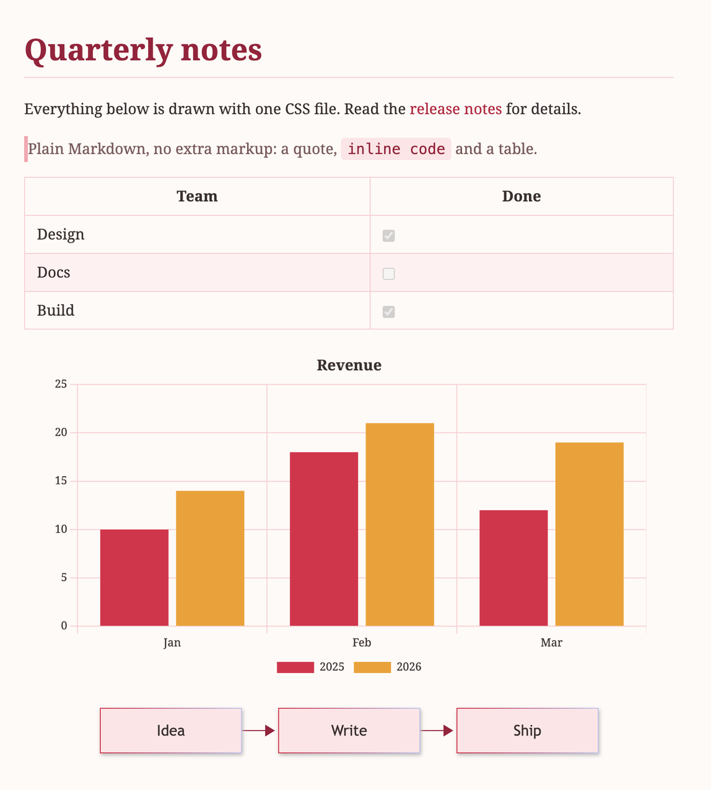
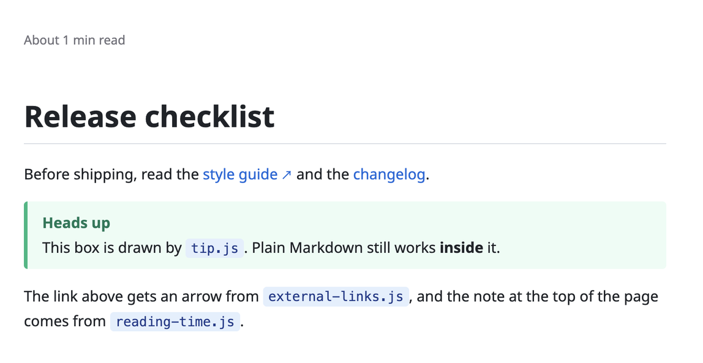

自訂
用主題改變文件的外觀，用插件加入新的語法與行為。兩者都只是一個檔案，放進資料夾就生效，不需要編譯，也不必重新啟動。這一頁的每個範例都實際載入過 app，旁邊的截圖就是它畫出來的結果。
檔案放哪裡
擴充有兩種，各有自己的資料夾：
- 主題：放在主題資料夾的
.css檔，負責預覽、HTML 匯出與 PDF 的外觀。 - 插件：放在插件資料夾的
.js檔，可以加入語法、改寫渲染結果，或在頁面裡畫東西。
最快的方式是 設定 → 外觀 → 開啟外觀資料夾（插件是 設定 → 插件 → 開啟插件資料夾）。新增或修改檔案後，在同一個分頁按 重新載入，不需要重新啟動 app。
| 系統 | 資料夾 |
|---|---|
| macOS | ~/Library/Application Support/Sheaf/themes，插件是 …/plugins |
| Windows | %APPDATA%\Sheaf\themes，插件是 …\plugins |
| Linux | ~/.config/Sheaf/themes，插件是 …/plugins |
自訂主題
主題就是一個 CSS 檔。檔名去掉 .css 就是它在 設定 → 外觀 裡的名字。所有規則都以 .markdown-body 為範圍，它是裝著渲染結果的元素。
從完整的檔案開始
自訂主題是取代內建外觀，而不是疊在 Default 上面，所以只寫標題樣式的檔案，其他地方就沒有樣式。結構性的規則（間距、清單符號、滿寬表格、換頁）一律會套用，顏色、字體、邊框與背景則全由你的主題決定。最簡單的做法是複製下面的範例，再改成你要的樣子。
/* rose.css: the file name is the theme name. */
.markdown-body {
color: #3b2f2f;
background: #fffaf7;
font-family: 'Noto Serif', 'Noto Serif TC', Georgia, serif;
}
.markdown-body h1, .markdown-body h2 { color: #9f1239; padding-bottom: 0.3em; border-bottom: 1px solid #fecdd3; }
.markdown-body a { color: #be123c; }
.markdown-body blockquote { color: #7f5b5b; border-left: 4px solid #fda4af; }
.markdown-body code:not(pre code) { padding: 0.15em 0.4em; border-radius: 4px; background: #ffe4e6; color: #9f1239; }
.markdown-body pre { background: #fff1f2; }
.markdown-body th, .markdown-body td { border: 1px solid #fecdd3; }
.markdown-body tbody tr:nth-child(even) { background: #fff1f2; }
/* Charts and Mermaid read these custom properties. */
.markdown-body {
--chart-1: #e11d48;
--chart-2: #f59e0b;
--chart-3: #0d9488;
--chart-4: #7c3aed;
--chart-text: #3b2f2f;
--chart-grid: #fecdd3;
--mermaid-primary: #ffe4e6;
--mermaid-primary-border: #e11d48;
--mermaid-primary-text: #3b2f2f;
--mermaid-line: #9f1239;
}
可以設定的地方
| 選擇器 | 對象 |
|---|---|
.markdown-body | 整個頁面：文字顏色、背景、字體，以及下面的自訂屬性 |
h1 … h6、p、a、blockquote、hr | .markdown-body 裡的一般元素 |
code:not(pre code) | 行內程式碼，不含程式碼區塊 |
pre | 程式碼區塊。語法高亮的顏色見下方 |
table、th、td、tr | 表格。斑馬紋用 tbody tr:nth-child(even) |
.callout、.callout-note、.callout-warning | :::note 與 :::warning 區塊。標題文字放在 data-title 屬性，由 ::before 畫出來 |
figure、figcaption | 有圖說的圖片。figcaption { display: none } 可以關掉圖說 |
li.task-list-item、.todo-box | 清單裡的待辦勾選框，以及單獨成行的勾選框 |
.mermaid-block、.chart-block | 流程圖與圖表的容器。拿來調整間距，顏色請看接下來兩節 |
規則在預覽、HTML 匯出與 PDF 裡的效果一致。只想影響列印的部分，寫在 @media print { … } 裡。
程式碼區塊的顏色
程式碼區塊用 Shiki 上色。它會把兩組顏色以 CSS 變數寫在每個字上，分別是 --shiki-light 與 --shiki-dark，區塊底色則是 --shiki-light-bg 與 --shiki-dark-bg。預設使用亮色那組；頁面是深色的主題可以改用深色那組：
.markdown-body .shiki,
.markdown-body .shiki span { color: var(--shiki-dark); }
.markdown-body pre.shiki { background: var(--shiki-dark-bg); }字體
Noto Sans 與 Noto Serif，包含繁體中文、簡體中文、日文、韓文版本，都內建在 app 裡，所以 font-family: 'Noto Serif', 'Noto Serif TC', Georgia, serif 在每一台電腦上看起來都一樣。其他字體必須安裝在閱讀文件的電腦上，匯出時也不會被內嵌。
中日韓共用許多漢字，清單裡第一個有這個字的字體就會負責畫它，所以請把你主要寫的語言放在最前面（TC、SC、JP、KR 的順序）。
設定圖表樣式
圖表在文件渲染時被畫成圖片，所以 CSS 規則進不到圖表裡面。取而代之的做法是在 .markdown-body 上設定自訂屬性，圖表在繪製時會讀取它們。
| 屬性 | 意義 |
|---|---|
--chart-1 … --chart-8 | 依序是各組資料（或圓餅的各個扇形）的顏色。預設值：#4e79a7、#f28e2b、#59a14f、#e15759、#b07aa1、#9c755f、#76b7b2、#bab0ac。資料組比顏色多時會重複使用 |
--chart-text | 標題、座標軸文字與圖例的顏色。預設是頁面的文字顏色 |
--chart-grid | 格線與邊框的顏色。預設 rgba(128, 128, 128, 0.3) |
--chart-font | 圖表文字的字體。預設是頁面的字體 |
.markdown-body {
--chart-1: #e11d48;
--chart-2: #f59e0b;
--chart-3: #0d9488;
--chart-text: #3b2f2f;
--chart-grid: #fecdd3;
}只改某一張圖
寫法 B（chart 程式碼區塊）接受完整的 Chart.js 設定，所以單張圖表可以使用 Chart.js 支援的任何選項。資料組自己指定了 backgroundColor 或 borderColor 就以它為準，主題只會替沒有指定顏色的資料組上色。
```chart
type: bar
data:
labels: [Q1, Q2, Q3]
datasets:
- label: Sales
data: [5, 9, 7]
backgroundColor: "#0d9488"
borderRadius: 6
options:
plugins:
legend: { display: false }
```設定是 YAML 或 JSON，所以不能寫函式。
設定 Mermaid 樣式
流程圖用同樣的概念：--mermaid-* 自訂屬性會被當成 Mermaid 的主題變數傳進去。只要設定了其中任何一個，Mermaid 就會切換到可自訂的 base 主題，沒設定的變數會依你設定的顏色自動推算。一個都沒設定時，圖就維持 Mermaid 原本的樣子。
| 屬性 | 意義 |
|---|---|
--mermaid-primary、-primary-text、-primary-border | 主要節點的填色、文字與邊框。從這裡開始調 |
--mermaid-secondary…、--mermaid-tertiary… | 第二與第三組顏色（各有 -text 與 -border），用在其他圖種與巢狀的部分 |
--mermaid-line | 箭頭與線條 |
--mermaid-text | 一般文字顏色 |
--mermaid-background | 圖的背景 |
--mermaid-font | 字體 |
--mermaid-node-border | 節點邊框 |
--mermaid-cluster-background、-cluster-border | 子圖（subgraph）的方框 |
--mermaid-note-background、-note-text、-note-border | 時序圖裡的備註 |
--mermaid-edge-label-background | 箭頭上標籤的底色 |
--mermaid-dark | 寫 true，會使用適合深色頁面的調色 |
顏色請寫成 #ffe4e6 這樣的十六進位色碼，因為 Mermaid 要從它們推算出需要的色階。
.markdown-body {
--mermaid-primary: #ffe4e6;
--mermaid-primary-text: #3b2f2f;
--mermaid-primary-border: #e11d48;
--mermaid-line: #9f1239;
}自訂插件
插件是放在插件資料夾的一個 .js 檔，是 ES module，預設匯出（default export） 是一個物件。設定 → 插件 會列出每個檔案並附上開關（關掉的插件完全不會被載入），載入失敗時也會顯示錯誤原因。
物件裡可以放什麼
| 欄位 | 作用 |
|---|---|
name | 顯示在清單裡的名稱。沒寫就用檔名 |
directives | 讓 :::名稱{屬性=值} 與 ::名稱 語法產生一個 HTML 元素。每個項目是一個函式，接收 { name, kind, attributes }（kind 是 text、leaf 或 container），回傳 { tagName, properties }。區塊裡寫的內容會渲染在這個元素裡面 |
remarkPlugins | 處理 Markdown 語法樹的插件，使用 unified 的格式：一個函式，或 [函式, 選項] |
rehypePluginsBeforeHighlight | 在程式碼上色之前處理 HTML 樹的插件。要接管自己語言的程式碼區塊時用它，內建的 Mermaid 與圖表插件就是這樣做的 |
rehypePlugins | 在程式碼上色之後處理 HTML 樹的插件 |
css | 字串，或是接收渲染後 HTML、回傳字串的函式，沒用到時可以不輸出樣式。它排在主題 CSS 之前，所以主題可以覆蓋它 |
postRender | (root, { themeCss }) => void | Promise，在預覽、HTML 匯出與 PDF 的渲染結果上執行。用來在預留位置畫東西，或調整 DOM |
docs | 說明你這個語法的 Markdown。它會附加在 AI 助理透過 MCP 取得的語法說明裡，讓助理知道怎麼寫 |
範例一：新的語法
這個插件新增 :::tip{title="…"}。properties 要用 HTML 屬性的寫法：className，以及 dataTitle，它會變成屬性 data-title。
export default {
name: 'Tip box',
directives: {
tip: ({ attributes }) => ({
tagName: 'div',
properties: { className: ['tip'], dataTitle: attributes.title ?? 'Tip' }
})
},
css: `
.markdown-body .tip { margin: 1em 0; padding: 0.6em 1em; border-left: 4px solid #10b981; border-radius: 4px; background: #ecfdf5; }
.markdown-body .tip::before { content: attr(data-title); display: block; font-weight: 600; color: #047857; }
.markdown-body .tip > :last-child { margin-bottom: 0; }
`,
docs: `
### Tip box
:::tip{title="Heads up"}
Text of the tip. The title attribute is optional.
:::
`
}範例二：改寫 HTML
rehype 插件是一個「回傳函式的函式」，回傳的函式會收到語法樹並直接修改它。插件是以獨立模組載入的，所以不能 import 套件名稱或其他檔案，走訪語法樹得自己寫，大約十行就夠。
function markExternalLinks() {
const walk = (node) => {
if (node.type === 'element' && node.tagName === 'a' && /^https?:/.test(node.properties?.href ?? '')) {
node.properties.className = [...(node.properties.className ?? []), 'external']
}
node.children?.forEach(walk)
}
return walk
}
export default {
name: 'External links',
rehypePlugins: [markExternalLinks],
css: `.markdown-body a.external::after { content: ' ↗'; font-size: 0.8em; }`
}範例三：畫面渲染完成之後
postRender 會拿到渲染好的元素，DOM 能做的事它都能做。這個範例在頁面最上方加上閱讀時間，預覽和匯出都看得到。
export default {
name: 'Reading time',
postRender(root) {
const text = [...root.querySelectorAll('p, li, td, h1, h2, h3, h4, h5, h6')].map((el) => el.textContent).join('')
const minutes = Math.max(1, Math.round(text.replace(/\s/g, '').length / 500))
const note = document.createElement('p')
note.className = 'reading-time'
note.textContent = `About ${minutes} min read`
note.style.cssText = 'color: #71717a; font-size: 0.85em; margin: 0 0 1em;'
root.prepend(note)
}
}
安裝與移除
- 把檔案放進插件資料夾，到 設定 → 插件 按 重新載入。
- 載入失敗時，原因會顯示在名稱下方。常見的原因是語法錯誤，或是漏了
export default。 - 不想用時，在清單裡把它關掉，或直接刪掉檔案。
只安裝你信任的插件。 插件擁有和編輯器頁面本身相同的能力，包括透過 app 讀取與儲存檔案。